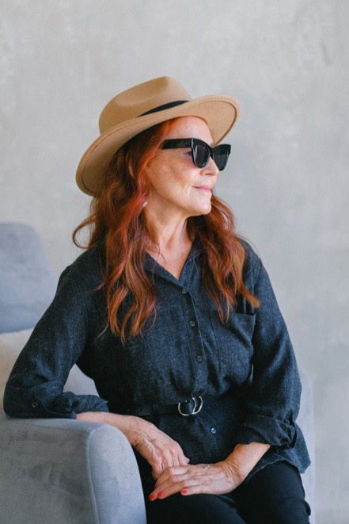
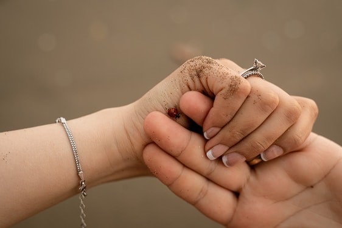
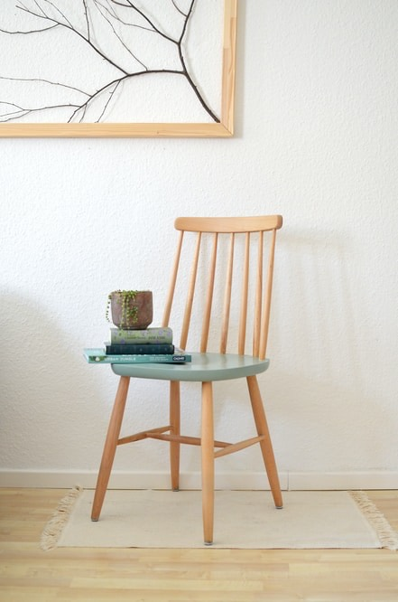
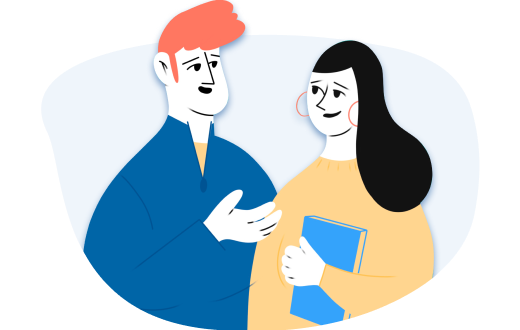

Как не утонуть в тревоге и управлять своими страхами
Содержание
Заголовок h3
Один из самых важных навыков, которые может дать работа с психотерапевтом — умение в разных ситуациях по-разному обходиться со своими эмоциями. Снять, отложить, предъявить, разделить, выдержать и дать им место.
Иногда тревога появляется как реакция на неопределённость. Нам хочется поскорее всё контролировать, но в этот момент полезнее не бороться с собой, а возвращать внимание к тому, что реально происходит здесь и сейчас.
Мы знаем, что нуждаться в помощи и поддержке в трудные периоды жизни абсолютно нормально для любого человека, и стремимся сделать психотерапию безопасной, удобной и доступной каждому
Ана Крымская
Что еще можно делать с тревогой?
- Управлять ей через что-то внешнее: включать музыку, которая создает другое настроение, сесть за работу с цифрами, которая быстренько активизирует другие участки мозга, читать блоги, которые вас успокаивают и отвлекают.
- А еще порой можно разрешить себе тревогу заесть чем-то вкусным. Это, конечно, не самая здоровая стратегия, но в ряде ситуаций можно считать ее вполне рабочей. Особенно, когда внутренний ресурс на нуле, а поддерживающее окружение не в доступе.

Чем шире доступный вам репертуар реакций и чем более осознанно вы можете выбирать из него то, что лучше всего подойдет в каждой конкретной ситуации, тем больше будет ваша устойчивость к стрессу, депрессии, неопределенности, да и к жизни в целом.
Мы знаем, что нуждаться в помощи и поддержке в трудные периоды жизни абсолютно нормально для любого человека, и стремимся сделать психотерапию безопасной, удобной и доступной каждому
Одна из ключевых задач психотерапии как раз и заключается в том, чтобы этот репертуар расширять и обучать человека пользоваться доступными ему реакциями в той последовательности, пропорции и объеме, которые подходят именно ему. Без оглядки на то, "как правильно" или "как у других".

Чем шире доступный вам репертуар реакций — тем более свободным вы можете быть в сложной ситуации. Это не значит всегда быть спокойным. Иногда достаточно распознать напряжение и сделать паузу.
Подумайте, какие способы поддержки уже работают: прогулка, разговор, дыхание, контакт с телом, запись мыслей или обращение к специалисту. Когда эти способы записаны заранее, к ним легче обратиться в момент сильного напряжения.
Упражнение #1
Нужно последовательно напрячь и расслабить каждую мышцу в теле на несколько секунд. Напрягайте плечи, руки, живот, ноги, лицо, затем отпускайте напряжение и отмечайте разницу в ощущениях. Смысл в том, чтобы через направленное действие дать стрессу выход, а затем вновь привести себя в спокойное состояние через расслабление. Повторите цикл несколько раз и отмечайте, где телу становится легче.
Что еще можно делать с тревогой?
- Управлять ею через что-то внешнее: включать музыку, которая создает другую настройку, съесть за работу с цифрами, которая постепенно возвращает другой ритм.
- А ещё можно мягко разрешить себе тревогу здесь и сейчас. Это помогает не спорить с эмоцией, а поддерживать себя на фоне того, что уже происходит.

Чем шире доступный вам репертуар реакций, тем легче выбирать действие, которое действительно поддержит, а не усилит напряжение. В такой момент можно попросить близкого человека просто побыть рядом, без советов и оценки.
Упражнение #2
Напишите тревожную мысль и рядом сформулируйте более реалистичную версию. Не обязательно убеждать себя, что всё идеально. Достаточно добавить факты, поддержку и конкретный следующий шаг. Смысл в том, чтобы найти опору и постепенно возвращать себе способность выбирать, а не двигаться только за тревогой. Если мысль повторяется, возвращайтесь к записи и дополняйте ее новыми фактами.

Чем шире доступный вам репертуар действий, тем меньше тревога занимает всё пространство внимания и тем легче возвращаться к обычным делам после напряженного дня.
Маленькие ритуалы восстановления помогают не спорить с эмоциями, а выдерживать их спокойнее: сделать паузу, выпить воды, выйти на воздух или записать тревожную мысль.
Одна из ключевых задач психотерапии как раз и заключается в том, чтобы этот репертуар расширять и обучать человека пользоваться доступными ему реакциями в той последовательности, пропорции и объеме, которые подходят именно ему. Без отказа от чувств, но с возвращением права на действие. Когда у человека появляется несколько способов реакции, тревога перестает быть единственным сценарием и становится сигналом, с которым можно работать.
Упражнение #3
Назовите три вещи, которые видите, два звука, которые слышите, и одно действие, которое можете сделать прямо сейчас. Это помогает вернуться в настоящий момент. Затем запишите, что уже получилось сделать, и что можно отложить до момента, когда напряжение станет меньше. Упражнение можно повторять несколько раз в день, особенно в переходные моменты между задачами.


Откликается проблема?
Поможем подобрать специалиста по работе с подобным запросом
